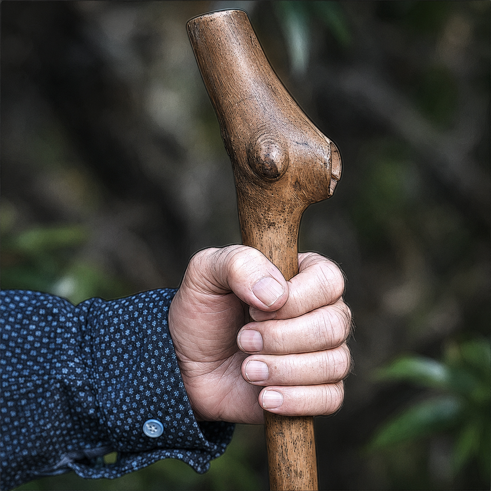

Opus Academy
The Opus Academy — where who you become and what you create arise together.
More than a Curriculum
I reconnect with journaling, ritual, dreamwork, and gentler ways of relating. The weekly experience of being witnessed opens new doors.— T., Massachusetts, USA
A curriculum is a list of things to learn. This is something else.
There are seven weathers in our world. They correspond to the seven traditional operations of alchemy, and on our pilgrimage we encounter them all. We don’t try to make them happen. Movement into and through these weathers occurs as a natural response to alchimage practices.
We will begin with a few practices; after that, you and the others in your company will discover more. You will share, learn from, and teach each other. It is a world of wild weathers, each with its particular ways of announcing itself, each with its transformational gifts. After your ten introductory weeks you will have come to understand this well.
The weathers, the company, the practices co-create the curriculum. It is a living system, with all the spaciousness needed to welcome you.
Welcome to the Opus Academy
There is a work that only you can do, and a self that only that work can call forth. We call this the co-emergence of Self and Opus: who you become and what you create arise together. You don’t first become yourself and then do your work. The work is how you become yourself.
I remember that I am enough. Sharing this journey reconnects me with my wholeness and the love that connects all beings.— S., Canada
The Opus Academy is a school for this work. It is not a place where experts dispense answers. It is a laboratory and a sanctuary — a place to learn the arts of transformation as they have been practiced across centuries and continents, and to apply them to the one life you are actually living.
The Ten-Week Journey
The heart of the Academy is a ten-week curriculum. We call it co-emergent because it is not a fixed syllabus delivered at you. Each cohort shapes the journey it takes. The frameworks and practices we offer are seeds; what grows depends on the soil each participant brings — your questions, your dreams, your history, your longing. We teach the methods. The process teaches itself.
Over ten weeks you will:
- Learn the foundational map of Alchimage — the stages of transformation understood not as a ladder to climb but as a spiral you travel at ever-deepening levels
- Take up core practices: dreamwork, journaling, ceremony, contemplative walking, and attentive relationship with the living world
- Discover how to read your own life as a pilgrim reads a landscape — alert to the call, the threshold, the encounter, and the return
- Walk alongside a small community of fellow pilgrims, because this work is never done alone
The curriculum supports rather than directs. Transformation cannot be forced or hurried; it is undergone, not manufactured. What can be done — what we do together — is create the conditions in which your own deep process can unfold consciously, with skill, companionship, and courage.
Small steps create significant changes. I feel less depleted, enjoy community more, set clearer boundaries, and pause before reacting.— J., Arizona, USA
The Shape of the Journey
- Duration
- 10 weeks
- Rhythm
- Weekly meetings with self-selected practices between
- Where
- Your home, your wild places, your place of work.
- Cost
- $565 USD
- Afterward
- Option to participate in ongoing process we call the Atelier, a creative workshop space where we continue to support each other.
Not sure yet? Join a monthly open call — an unhurried conversation about what this path asks and offers.
Alchemy
The alchemists of old labored over furnaces and vessels, seeking to transmute base metal into gold. What they were really refining, as C.G. Jung recognized, was themselves. Their strange and beautiful language — calcination, dissolution, conjunction, coagulation — describes the stages of inner transformation with a precision modern psychology is still catching up to. Alchemy gives us a way of seeing: transformation is real, it follows recognizable patterns, and the one who does the work is changed by the work.
Pilgrimage
Pilgrimage gives transformation its shape. The pilgrim leaves ordinary life, crosses a threshold, travels through territory where different rules apply, encounters something that changes them, and returns to integrate what was found. You don’t need the Camino de Santiago for this. Every walk through a forest, every season of honest inner work, can carry the structure of pilgrimage when approached with intention. The soul, it turns out, speaks at three miles an hour.
I return to grounding, love, and my center. I feel listened to, accepted as I am, and connected with the living world.— D., Colorado, USA

A Pilgrim’s Staff
Along the way we are given (or we discover) the artifacts, encouragement, and tools for the journey. Here is my staff. I didn’t go looking for it. Here is how it came to me.
I was guiding a training for Forest Therapy Guides in Ireland. We had a wonderful old forest to work in, with stones, tangles of brush, ancient trees, streams, and bogs. There lived next to the forest a man named Flor. He tended the forest; he knew it in its broad scope and in the particulars of its tiny details, hidden places, and wild living presences. On the fourth day of our training I noticed he was in his workshop, fiddling with a branch. I did not know what he was making. Two days later he presented me with this staff — a delightful surprise.
It is made of Holly. The wood is white but now, after many miles and many trails, it has taken on a patina and become darker.
— M. Amos Clifford, your fellow pilgrim
Alchimage: The Alchemy of Pilgrimage
Put these together and something new appears. Alchemy tells us what transformation is; pilgrimage tells us how it moves. When the inner refinement of the alchemist joins the outer journey of the pilgrim — when the laboratory becomes a landscape and the landscape becomes a laboratory — we call this the alchemy of pilgrimage.
Our word for it is Alchimage. The word arrived as a gift, and it holds three roots: alchemy, image, and pilgrimage — because the journey passes through the imaginal, the realm of dream, symbol, and vision where inner and outer meet. Alchimage names both a body of practices and the deeper process those practices serve: the lifelong, spiraling emergence of the authentic Self and its authentic work.
The Atelier
The ten weeks are a beginning, not a destination. Those who complete the curriculum are invited into the Atelier — an ongoing membership community for support and inspiration as the journey continues.
An atelier is an artist’s workshop: a place where works in progress are welcome, where craft deepens through practice and companionship. Ours gathers alumni for continued practice sessions, conversation, seasonal ceremonies, and the quiet encouragement of walking among others who understand the road. The opus is never finished. The Atelier is where we keep working it, together.
The Journey Begins
I trust the process, release the need to do it perfectly, and become more present to my body, heart, and true self.— G., Chile
Every opus begins before you know it has begun. A restlessness, a question that won’t resolve, a sense that something in your life is asking to be made — these are the early signs. Most of us are taught to ignore them. The Academy begins by taking them seriously.
You don’t need to arrive with a project, a plan, or even a clear question. You need only the willingness to attend to what is stirring. The first weeks of the journey are given to exactly this: slowing down enough to hear the call underneath the noise, and gathering — from your home, your wild places, your working life — the first materials of the work that wants you.
The application is open now. It is not a test to pass but a threshold to cross: a few honest questions, a conversation with the admissions circle, and a decision made together about whether this is your moment to begin. If you feel the stirring and can’t yet name it, that is not a reason to wait. That is how it starts.
Alchemy of Pilgrimage
I gain practical tools for going deeper into myself, understanding my experiences, and making difficult decisions with greater awareness.— C., Brazil
At the center of the Academy is a way of working we call the Alchemy of Pilgrimage — described more fully above, and practiced weekly throughout the ten weeks.
Here is the essence. Transformation is not something you perform on yourself. It is something you undergo — a process with its own intelligence, older than any method. What can be chosen are the practices: the walking, the dreamwork, the ceremony, the attentive gathering of materials, the honest circle of companions. Practices don’t manufacture transformation. They make you a conscious participant in a transformation already underway.
Alchemy contributes the understanding that this process has stages — dissolutions and refinements, dark passages and clarifications — and that the one who does the work is the work. Pilgrimage contributes the shape: departure, threshold, encounter, return, walked out on real land with real weather. Between them lies the imaginal — the realm of dream and symbol where inner and outer meet — which is why our word for the whole holds three roots: alchemy, image, pilgrimage.
Each week you will take up these practices in your own places and bring what you find to the circle. The curriculum provides the vessel. What happens in the vessel is yours.
The Pathways Beyond
This experience opens my world. I gain clarity, quietude, deeper connection, and practical tools that continue supporting me.— R., Canada
The ten weeks end. The journey doesn’t.
What you begin in the Academy — the practices, the way of seeing, the opus itself — continues to work in you long after the final circle. This is by design. We are not offering a course to complete but a way to walk, and a way needs companions for the long stretch.
The Atelier is the first pathway beyond: the ongoing workshop community described above, where alumni continue to practice, gather, and support one another’s unfinished work. The opus is never finished; the Atelier is where we keep working it, together.
Other pathways open according to your own becoming. Some who complete the journey deepen into further studies within the Alchimage tradition. Some carry the practices home and let them quietly reorganize a life. Some discover that their opus is itself a doorway others will one day walk through. There is no prescribed route beyond the ten weeks — only the assurance that you will not walk unaccompanied unless you choose to.
Co-Emergence of Self and Opus
I become freer, wilder, and more fully myself. My relationships with people and the more-than-human world grow deeper and more alive.— K., Slovenia
This is the mystery at the heart of everything the Academy does, and it can be said simply: you and your work make each other.
The culture around us tells a different story — first find yourself, then express yourself; first become confident, then create. The truth runs the other way, or rather, both ways at once. The work draws out of you a self that did not exist before the work began. The self, emerging, becomes capable of work it could not previously imagine. Neither comes first. They arise together, each the condition of the other, the way a river and its banks shape one another with every season of water.
This is why we speak of the opus not as a product but as a partner. What wants to be made through you is also making you. To take up your opus is to consent to your own transformation — and to discover that the question “who am I?” and the question “what is mine to make?” were always the same question, asked from two sides.
The Academy cannot give you your opus. No one can. What it offers is a season of conditions — practice, companionship, land, and time — in which the two of you can find each other.
Upcoming Alchimage Events
Upcoming events will be announced here.
I am surprised in beautiful and unexpected ways. The journey opens my heart, renews my confidence, and reconnects me with hidden parts of myself.— A., Arizona, USA
The Opus Academy — where who you become and what you create arise together.